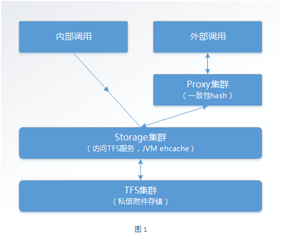
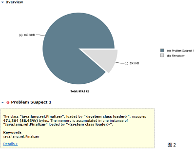
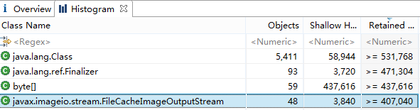

【JAVA】 记一次内存泄漏造成的线上故障
2014-12-21 私信附件故障
时间轴
2014-12-19 群聊服务上线，IOS版本发版
10:47 第一条storage报警日志
11:10 私信平台故障白页，长微博发送失败，Storage报警持续上升，TFS第一条写失败报警
11:15 重启storage服务，私信服务恢复，但无法发送私信附件，长微博恢复
11:20 proxy报警，线程超出阀值；TFS大量balance_plan fail和cannot find block，must create日志
11:23 重启NS,服务有所恢复
11:45 私信附件服务恢复
私信附件架构

分析
storage内存溢出 "内存溢出日志1行,请及时处理！[@1221_10:47]" 扫storage日志：[root@tfsweb002 logs]# zgrep -i "outofmemory" debug_cn.log.2014122111.gz
2014-12-21 11:00:08 214 [ERROR] Detected OutOfMemory potentia memory > 90%, stop broadcast presence !!!!!!
2014-12-21 11:00:14 139 [ERROR] Detected OutOfMemory potentia memory > 90%, stop broadcast presence !!!!!!
2014-12-21 11:00:20 779 [ERROR] Detected OutOfMemory potentia memory > 90%, stop broadcast presence !!!!!!
2014-12-21 11:00:27 315 [ERROR] Detected OutOfMemory potentia memory > 90%, stop broadcast presence !!!!!!
*** ***[root@wbim002 develop-tools]# ./wtool jargrep "Detected OutOfMemory potentia memory" ../jarsource/
find 'Detected OutOfMemory potentia memory' in ../jarsource/
==> Found "Detected OutOfMemory potentia memory" in ../jarsource/api-commons-3.79.jardouble maxMemory = (double) runtime.maxMemory() / (1024 * 1024);
double usedMemory = totalMemory - freeMemory;
double percentFree = ((maxMemory - usedMemory) / maxMemory) * 100.0;
if (percentFree < 10) {
outOfMemory.set(true);
log.error("Detected OutOfMemory potentia memory > 90%, stop broadcast presence !!!!!!");
} else if (outOfMemory.get() == true && percentFree > 20) {
outOfMemory.set(false);
log.error("Detected memory return to normal, memory < 80%, resume broadcast presence.");
}[root@tfsweb002 home]# grep "java.lang.Thread.State: RUNNABLE" logs1221_jstack |wc -l
611
[root@tfsweb002 home]# grep "java.lang.Thread.State" logs1221_jstack |wc -l
759[root@tfsweb015 ~]# jstack 19474 |grep "java.lang.Thread.State: RUNNABLE"|wc -l
52
[root@tfsweb015 ~]# jstack 19474 |grep "java.lang.Thread.State"|wc -l
7041）请求量大 2）线程累积
不管是哪种情况，都会占用大量jvm内存。查询当时的请求量后发现当时的请求量和平时相比上升了20%左右，量不是很大，说明两种情况均有可能出现。一个细节是附件本身的大小有增长，附件大小比较大。
[root@tfsweb015 ~]# jstat -gccause 19474
S0 S1 E O P YGC YGCT FGC FGCT GCT LGCC GCC
0.00 98.80 54.86 58.65 16.86 7352 407.399 7370 3784.086 4191.485 GCLocker Initiated GC No GC
97.85 0.00 97.08 38.87 16.86 7359 407.737 7372 3784.138 4191.875 GCLocker Initiated GC No GCDetected OutOfMemory potentia memory > 90%”是不奇怪的。
root@tfsweb002 logs1221]# jstack 19474 | grep "java.lang.Thread.State: RUNNABLE"
"Attach Listener" daemon prio=10 tid=0x0000000047eaa800 nid=0x7adc waiting on condition [0x0000000000000000]
java.lang.Thread.State: RUNNABLE
"Image Fetcher 0" daemon prio=10 tid=0x00002aaad04f0000 nid=0x7189 waiting on condition [0x000000006f1e3000]
java.lang.Thread.State: RUNNABLE
at sun.awt.image.JPEGImageDecoder.readImage(Native Method)
******sun.java2d.loops.TransformHelper.Transform()，共有88例；
com.sun.imageio.plugins.jpeg.JPEGImageReader.readImageHeader()，共有73例；
com.sun.imageio.plugins.jpeg.JPEGImageReader.readImage()，共有68例；
org.apache.tomcat.util.threads.ThreadPool$ControlRunnable，13例。
Transform()
相关堆栈："catalina-exec-1352" daemon prio=10 tid=0x00002aaacd257800 nid=0x515d waiting on condition [0x000000006eadb000]
java.lang.Thread.State: RUNNABLE
at sun.java2d.loops.TransformHelper.Transform(Native Method)
at sun.java2d.pipe.DrawImage.renderImageXform(DrawImage.java:446)
at sun.java2d.pipe.DrawImage.transformImage(DrawImage.java:251)
at sun.java2d.pipe.DrawImage.scaleImage(DrawImage.java:111)
at sun.java2d.pipe.DrawImage.scaleImage(DrawImage.java:1021)
at sun.java2d.pipe.ValidatePipe.scaleImage(ValidatePipe.java:189)
at sun.java2d.SunGraphics2D.drawImage(SunGraphics2D.java:2944)
at sun.java2d.SunGraphics2D.drawImage(SunGraphics2D.java:2895)
at net.coobird.thumbnailator.resizers.ProgressiveBilinearResizer.resize(Unknown Source)
at net.coobird.thumbnailator.resizers.Resizers.resize(Unknown Source)
at net.coobird.thumbnailator.makers.ThumbnailMaker.makeThumbnail(Unknown Source)
at net.coobird.thumbnailator.makers.FixedSizeThumbnailMaker.make(Unknown Source)
at net.coobird.thumbnailator.Thumbnailator.createThumbnail(Unknown Source)
at net.coobird.thumbnailator.Thumbnails$Builder.toOutputStream(Unknown Source)
at cn.sina.as.util.ImageUtil.reSizeImage(ImageUtil.java:34)
at cn.sina.as.service.impl.AttachStorageServiceImpl.getStorageThumbnail(AttachStorageServiceImpl.java:733)
at cn.sina.as.api.servlet.AttachStorageDownloadThumbnailServlet.process(AttachStorageDownloadThumbnailServlet.java:79)
at cn.sina.as.api.servlet.AbstractAsServlet.process(AbstractAsServlet.java:48)
at cn.sina.as.api.servlet.BaseASServlet.doGet(BaseASServlet.java:37)
******sun.java2d.loops.TransformHelper.Transform()方法调用的是本地libawt.so中的方法，该动态库是JRE用来实现2D图像处理的本地库，Transform()的功能是将图像映射到系统用户内存空间，这需要系统为该操作分配内存空间，由于请求量和请求流的增长，JVM的内存吃紧，没有足够的内存空间分配出来，导致该线程处于waiting on condition状态，并且导致大量Full GC。
readImageHeader()
相关堆栈："catalina-exec-1315" daemon prio=10 tid=0x00002aaad053d000 nid=0x5138 waiting on condition [0x0000000067768000]
java.lang.Thread.State: RUNNABLE
at com.sun.imageio.plugins.jpeg.JPEGImageReader.readImageHeader(Native Method)
at com.sun.imageio.plugins.jpeg.JPEGImageReader.readNativeHeader(JPEGImageReader.java:532)
at com.sun.imageio.plugins.jpeg.JPEGImageReader.checkTablesOnly(JPEGImageReader.java:277)
at com.sun.imageio.plugins.jpeg.JPEGImageReader.gotoImage(JPEGImageReader.java:409)
at com.sun.imageio.plugins.jpeg.JPEGImageReader.getImageMetadata(JPEGImageReader.java:931)
at net.coobird.thumbnailator.util.exif.ExifUtils.getExifOrientation(Unknown Source)
at net.coobird.thumbnailator.tasks.io.InputStreamImageSource.read(Unknown Source)
at net.coobird.thumbnailator.tasks.SourceSinkThumbnailTask.read(Unknown Source)
at net.coobird.thumbnailator.Thumbnailator.createThumbnail(Unknown Source)
at net.coobird.thumbnailator.Thumbnails$Builder.toOutputStream(Unknown Source)
at cn.sina.as.service.impl.AttachStorageServiceImpl.getStorageThumbnail(AttachStorageServiceImpl.java:733)
at cn.sina.as.api.servlet.AttachStorageDownloadThumbnailServlet.process(AttachStorageDownloadThumbnailServlet.java:79)
at cn.sina.as.api.servlet.AbstractAsServlet.process(AbstractAsServlet.java:48)
at cn.sina.as.api.servlet.BaseASServlet.doGet(BaseASServlet.java:37)
******public static byte[] reSizeImage(byte[] inImage, int resizeL, int resizeH) {
if (inImage == null) return null;
try {
ByteArrayInputStream in = new ByteArrayInputStream(inImage);
ByteArrayOutputStream out = new ByteArrayOutputStream();
Thumbnails.of(in).size(resizeL, resizeH).toOutputStream(out);
return out.toByteArray();
} catch (Exception e) {
ApiLogger.warn("ImageUtil reSizeImage error, ", e);
return inImage;
}
}[root@tfsweb015 ~]# jmap -histo 19474 | head
num #instances #bytes class name
----------------------------------------------
1: 250336 3972708320 [B
2: 283254 56727104 [C
3: 192806 32522808 [I
4: 397600 15904000 java.util.concurrent.ConcurrentHashMap$Segment
5: 398604 12755328 java.util.concurrent.locks.ReentrantLock$NonfairSync
6: 397600 9819184 [Ljava.util.concurrent.ConcurrentHashMap$HashEntry;
7: 64589 9561736
*** ***
Total 4923739 4257037712 [root@tfsweb015 ~]# jmap -dump:format=b,file=/data0/heap.bin 19474使用Eclipse IDE Memory Analyzer分析如图2和图3。


从图中可以看到，虽然少，但还是有内存泄漏，看起来是finalize()的内存泄漏。继续在jdk的javax.imageio中查找finalize的踪影，发现com.sun.imageio.stream.StreamFinalizer()会对ImageInputStream执行StreamFinalizer()方法，其中实现了finalize()：public class StreamFinalizer {
private ImageInputStream stream;
public StreamFinalizer(ImageInputStream stream) {
this.stream = stream;
}
protected void finalize() throws Throwable {
try {
stream.close();
} catch (IOException e) {
} finally {
stream = null;
super.finalize();
}
}
}Image{Input,Output}Stream（接口）如果被实现，在实现类构造时会构造StreamFinalizer，Image{Input,Output}Stream和StreamFinalizer彼此保留对方的应用，如果双方不可达，就会调用StreamFinalizer.finalize()，以便在特殊情况下在GC回收之前释放Image{Input,Output}Stream。当然，Image{Input,Output}Stream的实现类也保留了finalize()方法的实现（置空），通过GC来回收，保证一般情况下的性能问题。
在reSizeImage()方法中，我们new了ByteArray{Input,Output}Stream，从上面堆栈的信息可以看出，通过net.coobird.thumbnailator包中的Thumbnailator.createThumbnail()方法将其重新封装为Image{Input,Output}Stream的子类FileImage{Input,Output}Stream，正常情况下，ByteArray{Input,Output}Stream不需要close()，交给GC回收相关资源即可，在JDK的实现中close()也是空的，但是在这里，由于ByteArray{Input,Output}Stream使用多态机制通过{Input,Output}Stream传入，并被封装为FileImage{Input,Output}Stream，为了让FileImage{Input,Output}Stream尽快释放，最好主动close(ByteArray{Input,Output}Stream)，否则在负载重的情况下，如果GC不及时或失败，会导致内存泄漏，吃掉可用内存。
由于ByteArray{Input,Output}Stream的Close()实现被JDK置空了，我们需要借助IOUtil的close()方法手动释放资源。
readImage()
相关堆栈：at com.sun.imageio.plugins.jpeg.JPEGImageReader.readImage(Native Method)
at com.sun.imageio.plugins.jpeg.JPEGImageReader.readInternal(JPEGImageReader.java:1137)
at com.sun.imageio.plugins.jpeg.JPEGImageReader.read(JPEGImageReader.java:948)
at javax.imageio.ImageReader.read(ImageReader.java:923)
at net.coobird.thumbnailator.tasks.io.InputStreamImageSource.read(Unknown Source)
at net.coobird.thumbnailator.tasks.SourceSinkThumbnailTask.read(Unknown Source)
at net.coobird.thumbnailator.Thumbnailator.createThumbnail(Unknown Source)
at net.coobird.thumbnailator.Thumbnails$Builder.toOutputStream(Unknown Source)
at cn.sina.as.util.ImageUtil.reSizeImage(ImageUtil.java:34)
******ThreadPool$ControlRunnable
相关堆栈："TP-Processor1" daemon prio=10 tid=0x00002aaab843a800 nid=0x6c69 in Object.wait() [0x000000004e7db000]
java.lang.Thread.State: WAITING (on object monitor)
at java.lang.Object.wait(Native Method)
- waiting on <0x00000006fd005fe8> (a org.apache.tomcat.util.threads.ThreadPool$ControlRunnable)
at java.lang.Object.wait(Object.java:485)
at org.apache.tomcat.util.threads.ThreadPool$ControlRunnable.run(ThreadPool.java:662)
- locked <0x00000006fd005fe8> (a org.apache.tomcat.util.threads.ThreadPool$ControlRunnable)
at java.lang.Thread.run(Thread.java:662)查看storage容器的共享线程池配置：
<Executor
className="com.weibo.api.tomcat.StandardThreadExecutor"
name="tomcatThreadPool"
namePrefix="catalina-exec-"
maxThreads="800"
minSpareThreads="100"
/>
ehCache内存泄漏的问题
在查找问题时碰到ehCache内存泄漏的一些案例，根据解决办法查找了本地的配置文件，没有考虑。具体描述为：spring中的提供了一个名为org.springframework.web.util.IntrospectorCleanupListener的监听器。它主要负责处理由JavaBeans Introspector的使用而引起的缓冲泄露。spring中对它的描述如下：
它是一个在web应用关闭的时候清除JavaBeans Introspector的监听器。在web.xml中注册这个listener，可以保证在web 应用关闭的时候释放与掉这个web 应用相关的class loader 和由它管理的类 。如果使用了JavaBeans Introspector来分析应用中的类，Introspector 缓冲中会保留这些类的引用。结果在应用关闭的时候，这些类以及web 应用相关的class loader没有被垃圾回收。
解决办法在web.xml中加入：
<listener>
<listener-class>org.springframework.web.util.IntrospectorCleanupListener</listener-class>
</listener>